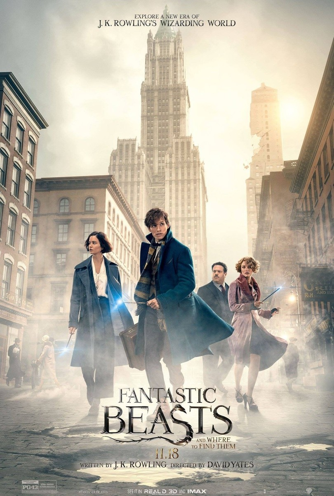
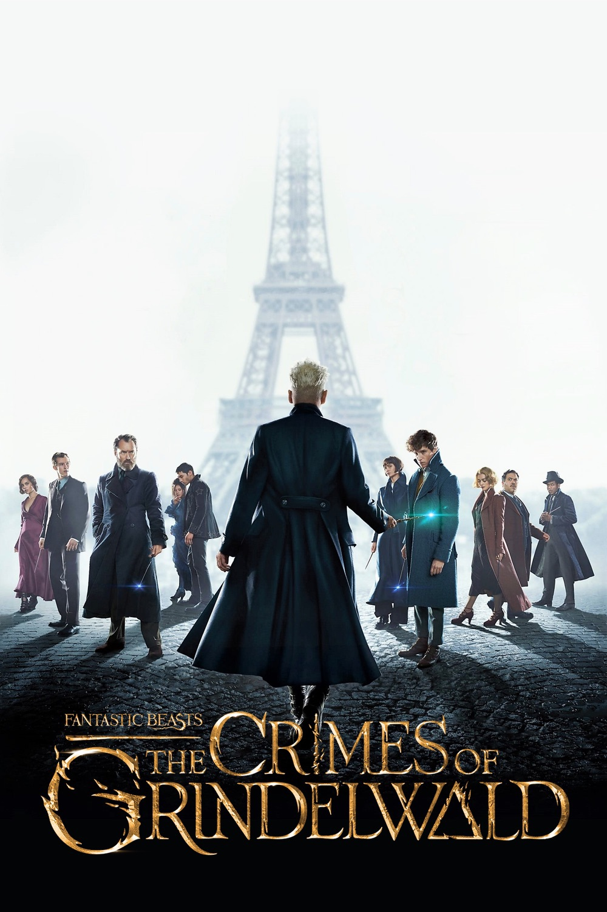
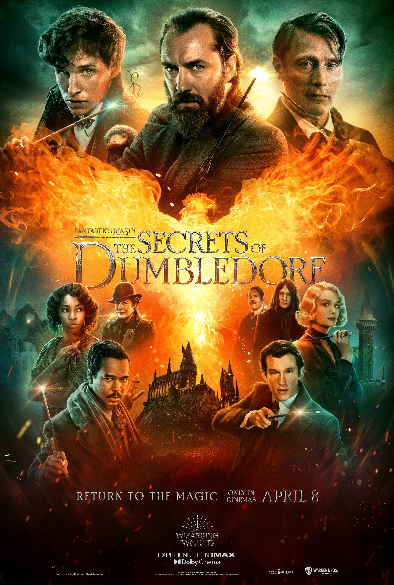
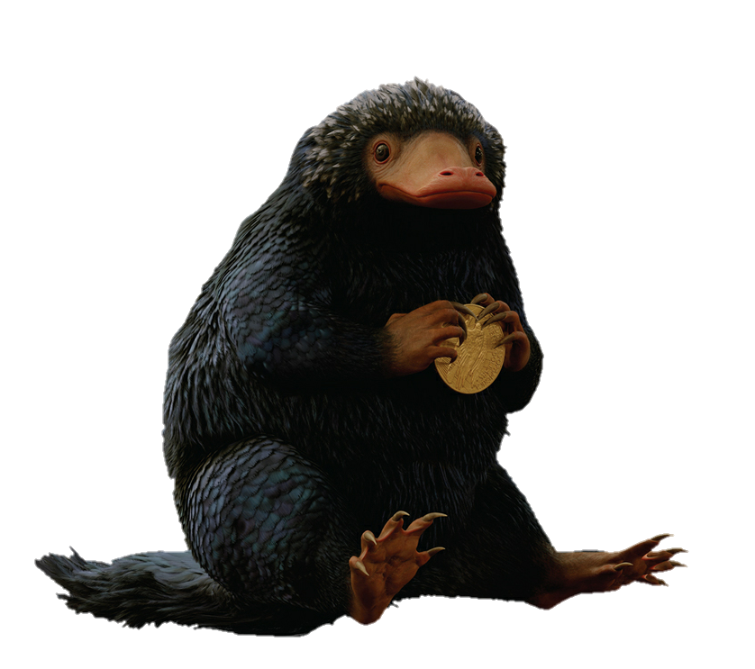

In 1926, Newt Scamander, a British wizard who studies magical creatures, arrives in New York with a
suitcase full of magical beasts. After a mix-up with a No-Maj(No-Magic or Muggle) named Jacob, some
creatures escape and cause chaos around the city. Newt and Jacob are caught by former Auror Tina
Goldstein, who thinks they are responsible for the trouble. At the same time, New York is being attacked
by a hidden dark force called an Obscurus. The magical government, MACUSA, blames Newt’s creatures,but
Newt, Tina, Jacob, and Tina’s sister Queenie discover the real source is Credence, an abused young man
raised by anti-magic leader Mary Lou Barebone. Credence has become an Obscurial, and he is secretly
being used by Auror Percival Graves, who is actually dark wizard Gellert Grindelwald. In the end,
Credence is destroyed, Grindelwald is exposed, and Jacob’s memories are erased with a special rain to
keep him safe. Newt decides to stay in America to protect magical creatures and help those in need,
while Grindelwald escapes to continue his dark plans.
Click book cover to shop for the movie!

In 1927, dark wizard Gellert Grindelwald escapes and begins gathering followers
in Paris, promising a world where wizards rule over non‑magical people. Newt
Scamander is secretly asked by Dumbledore to find Credence, who somehow survived
and is searching for his real family. Newt goes to Paris, where he gets caught
between the Ministry, Grindelwald’s followers, and old friends like Tina,
Queenie, and Jacob. Queenie is upset by wizard–No-Maj marriage laws and is drawn
to Grindelwald’s promises. At a rally in a cemetery, Grindelwald shows a
terrifying vision of a coming war and asks wizards to join him; some, including
Queenie, cross the line to his side. Newt refuses and helps fight back.
Grindelwald unleashes a deadly blue fire, but Newt, Tina, and others work
together to stop it. In the end, Grindelwald escapes with Credence, who is told
he is actually Aurelius Dumbledore, shocking everyone.
Click book cover to shop for the movie!

In the early 1930s, Dumbledore knows Grindelwald is trying to take over the
wizarding world but can’t fight him directly because of a blood pact they made
when they were young. He asks Newt Scamander and a small team—including Jacob,
Tina’s sister Queenie’s old love, Newt’s brother Theseus, and others—to help
stop Grindelwald’s plan. Grindelwald uses a magical creature called a qilin,
which can “see” a person’s heart, to fake a sign that he is pure and should lead
the wizarding world. Newt and his friends secretly protect another qilin twin
and expose Grindelwald’s trick during a big election. The truth breaks the blood
pact, letting Dumbledore and Grindelwald finally duel. Grindelwald escapes,
badly shaken, while Dumbledore walks away alone. Queenie and Jacob reunite and
marry, and Newt’s group quietly returns to their lives, knowing the fight
against Grindelwald isn’t over.
Click book cover to shop for the movie!
| Movie | Release Date | Fantastic Beasts and Where to Find Them(Book) | 2001 |
|---|---|
| Fantastic Beasts and Where to Find Them | 2016 |
| Fantastic Beasts: The Crimes of Grindelwald | 2018 |
| Fantastic Beasts: The Secrets of Dumbledore | 2022 |
Give us a thumbs-up or thumbs-down if this page was helpful:
Hover over the niffler to see it in action!
